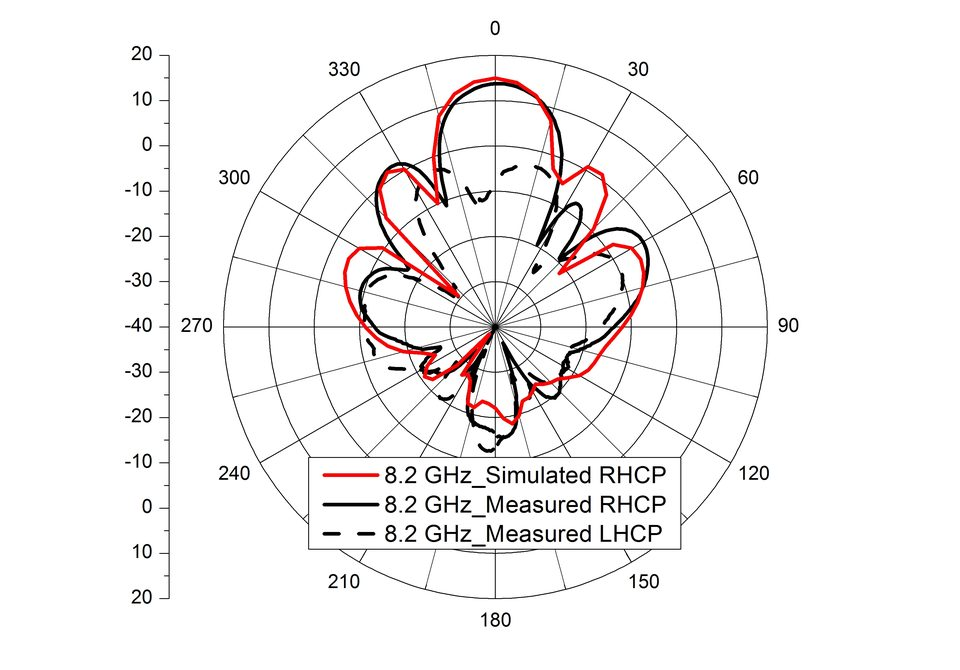

연구실적 · 국내전문학술지
순차적 급전을 이용한 위성 통신용 SIW 2×4 배열 안테나
SIW-Based 2×4 Array Antenna with a Sequential Feeding for X-Band Satellite Communication

초록
본 논문에서는 순차적 급전을 이용한 위성 통신용 2×4 균일 배열 안테나(uniform array antenna)와 각 안테나 소자로 균등 급전을 하기 위한 8분기 전력분배기 구조를 제안하였다. 제안된 배열 안테나는 배열 구조에 의한 전계 상쇄 현상을 방지하고, 순도 높은 원형 편파(RHCP)를 발생시키기 위하여 순차적 급전 방식을 적용하였다. 각각의 안테나 소자에 90도 위상 지연 선로를 첨가하여 순차적 급전을 이루었고, 각각에서 발생하는 전계의 방향도 일치하도록 하였다. 설계된 위성 통신용 2×4 배열 안테나의 반사 손실은 -10 ㏈ 기준 대역폭이 760 ㎒(7.90～8.66 ㎓), RHCP 이득은 8.3 ㎓에서 14.3 ㏈ic, 3 ㏈ 축비 대역폭은 600 ㎒(8.15～8.75 ㎓)의 특성을 나타내었고, 전력분배기는 8개의 port에서 ?9.2 ㏈의 동일한 전달 특성을 나타내었다.
사이트 원문 표기
정은영, 이재욱, 이택경, 이우경, “순차적 급전을 이용한 위성 통신용 SIW 2×4 배열 안테나”, 한국전자파학회논문지, 제22권 2호, 2011년 2월
BibTeX
@article{Jung_2011,
title={SIW-Based 2×4 Array Antenna with a Sequential Feeding for X-Band Satellite Communication},
volume={22},
ISSN={1226-3133},
url={http://dx.doi.org/10.5515/KJKIEES.2011.22.2.125},
DOI={10.5515/kjkiees.2011.22.2.125},
number={2},
journal={The Journal of Korean Institute of Electromagnetic Engineering and Science},
publisher={Korean Institute of Electromagnetic Engineering and Science},
author={Jung, Eun-Young and Lee, Jae-Wook and Lee, Taek-Kyung and Lee, Woo-Kyung},
year={2011},
month=Feb,
pages={125–130}
}